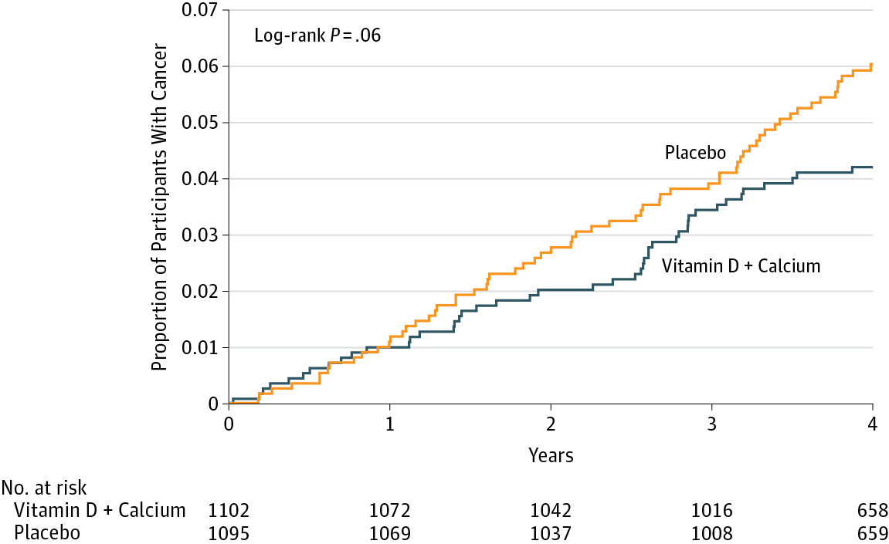
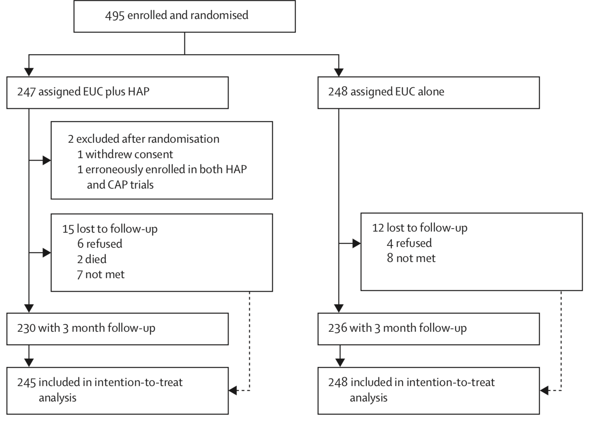
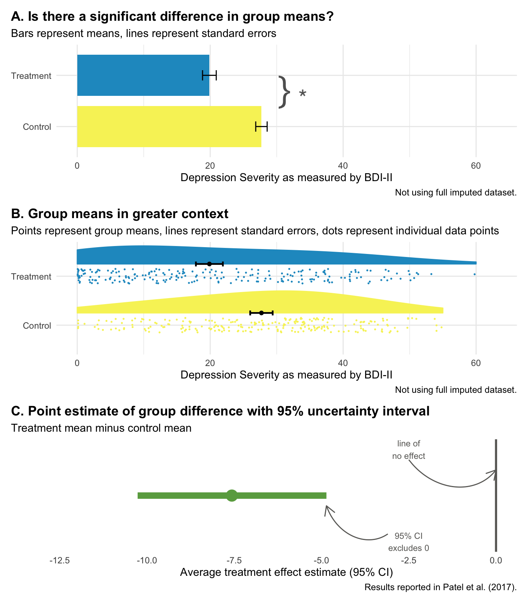

8 Statistical Inference
Consider the following figure. It comes from a randomized clinical trial of 2,303 healthy postmenopausal women that set out to answer the question, “Does dietary supplementation with vitamin D3 and calcium reduce the risk of cancer among older women?” (Lappe et al. 2017). Before we go any further, look at the image and decide what you think.
Figure 8.1: Invasive and in situ cancer incidence among healthy older women receiving vitamin D and calcium vs placebo. Source: Lappe et al. (2017).
If you said “No, look at the p-value”, please be patient and I’ll deal with you in moment. If you said, “Maybe, but there’s no estimate of uncertainty” or “Maybe, but what’s more important is the size of the risk decrease”, then you are my favorite. Please go get a cookie.
If you said “Yes”, you’re probably in good company. I think most readers will come to the same conclusion. Without knowing anything else about the specific analysis or statistics in general, you can look at this figure and see that both groups started at 0% of participants with cancer (which makes sense given the design), over time members of both groups developed some type of cancer, and by the end of the study period cancer was more common among the non-supplement (placebo) group.
But “Yes” is not what the authors concluded. Here’s what they said:
In this RCT…supplementation with vitamin D3 and calcium compared with placebo did not result in a significantly lower risk of all-type cancer at 4 years. [emphasis added]
Here’s a sample of news reports about the results:
New York Times: “The supplements did not protect the women against cancer”
Medical News Today: “Clinical trial finds that vitamin D, calcium have no effect on cancer risk”
Time: “There were no differences in cancer rates between the two groups”
WebMD: “High Doses of Vitamin D Fail to Cut Cancer Risk”
Technically they are correct. While the supplement group had a 30% lower risk for cancer compared to the placebo group (a hazard ratio of 0.70), the 95% confidence interval around this estimate spanned from 0.47 (a 53% reduction) to 1.02 (a 2% increase), thus crossing the line of “no effect” for ratios at 1.0. The p-value was 0.06 and their a priori significance cutoff was 0.05, so the result was deemed “not significant” and the conclusion was that supplements do not lower cancer risk.
But is that the best take? Not everyone thought so. Here’s what Ken Rothman and his colleagues wrote to the journal editors:
JAMA published a different letter to the editor that raised similar issues (Jaroudi and Peiris 2017), and the authors of the original paper responded (Lappe, Garland, and Gorham 2017):
“…the possibility that the results were clinically significant should be considered. The 30% reduction in the hazard ratio suggests that this difference may be clinically important.”
JAMA rejected this letter from my colleagues & me (“low priority”), so we're publishing on twitter, hoping JAMA will take it more seriously. pic.twitter.com/bh7byo4CrR
— Ken Rothman ((???)) May 9, 2017
The best answer, at least in my view, is that the trial was inconclusive. The point estimate is that supplements reduced cancer risk by 30%, but the data are also consistent with a relative reduction of 53% and an increase of 2%. In absolute terms, the group difference in cancer prevalence at Year 4 was 1.69 percentage points. It seems like there might be a small effect. Whether a small effect is clinically meaningful is for the clinical experts on your research team to decide.
This example highlights some of the challenges with statistical inference. Recall from Chapter 1 that science is all about inference: using limited data to make conclusions about the world. We’re interested in this sample of 2,300 because we think the results can tell us something about cancer risk in older women more generally. But to make this leap, we have to make several inferences.
First, we have to decide whether we think the observed group differences in cancer risk in our limited study sample reflect a true difference or not. This is a question about statistical inference. Second, we have to ask whether this difference in observed cancer risk was caused by the supplements. This is a question of causal inference (and internal validity), and we’ll take this on in the next chapter. Finally, if we think the effect is real, meaningful, and caused by the intervention, do we think the results apply to other groups of older women? This is a question of generalizability and external validity, a topic we’ll cover in Chapter 14.
But for now, let’s explore statistical inference. There’s a lot to unpack from this example. I’ll start by telling you about the most common approach that involves p-values and null hypotheses, highlight some of the challenges and controversies of this approach, and then present some alternatives. I’ll end with some suggestions about how you can continue to build your statistical inference skills.
8.1 Two Major Approaches to Statistical Inference
I’m ignoring a third major school of statistical inference called the Likelihood approach. See Dienes (2008) for a nice introduction.
There are two main approaches to statistical inference: the Frequentist approach and the Bayesian approach. A key distinction between the two is the assumed meaning of probability.
Believe it or not, smart people continue to argue about the definition of probability. If you are a Frequentist, then you believe that probability is an objective, long-run relative frequency. Your goal when it comes to inference is to limit how often you will be wrong in the long run.
You can be both and use whichever approach makes the most sense for the task, but I’ll be a bit more black-and-white for now.
If you are a Bayesian, however, you favor a subjective view of probability that says you should start with your degree of belief in a hypothesis and update that belief based on the data you collect.
I’ll explain what this all means, but before we get too far along, please think about what YOU want to know most:
- the probability of observing the data you collected if your preferred hypothesis was not true; or
- the probability of your hypothesis being true based on the data you observed?
8.2 Frequentist Approach
The Frequentist approach (and terms like “significant”) originated with Sir Ronald Fisher, but Jerzy Neyman and Egon Pearson worked out the logic of hypothesis testing and inference (Dienes 2008). If you are a standard user of Frequentist methods, you are probably a follower of Neyman-Pearson.
Open just about any medical or public health journal and you’ll find loads of tables with p-values and asterisks, and results described as “significant” or “non-significant”. These are artifacts of the Frequentist approach, specifically the Neyman-Pearson approach.
8.2.1 HOW IT WORKS
In the Neyman-Pearson approach, you set some ground rules for inference, collect and analyze your data, and compare your result to the benchmarks you set. Inference is essentially mindless automatic once you set the ground rules. To explore how it works, let’s return to the trial of the Healthy Activity Program for depression discussed in Chapter 7. As a reminder, Patel et al. (2017) conducted a randomized controlled trial to answer the following research question:
In this randomized controlled trial, the control group was not completely inactive. They received something called “enhanced usual care”. Here is how Patel et al. (2017) described it: “In the enhanced usual care group, usual care and treatment provided by the [primary care] physician was enhanced by provision of screening results to both patient and physician and use of a contextualised version of the mhGAP guidelines (a manual containing the specific mhGAP guidelines for primary care physicians treating depression), including when and where to refer for psychiatric care.”
Among adults 18–65 years of age with a probable diagnosis of moderately severe to severe depression from 10 primary health centres in Goa, India, does enhanced usual care plus a manualised psychological treatment based on behavioural activation delivered by lay counselors—the Healthy Activity Program, or HAP—reduce depression severity compared to enhanced usual care alone? [not a direct quote]
Step 1: Specify two hypotheses
In hypothesis testing, we set up two precise statistical hypotheses: a null hypothesis (H0) and an alternative hypothesis (H1). Most often the null hypothesis is stated as the hypothesis of no difference:
The “null” hypothesis doesn’t have to be a hypothesis of no difference (Dienes 2008). The null could be a specific difference that is a value other than 0, e.g., μ1- μ2= 3, or a band of differences.
H0: μ1
=μ2 (or μ1-μ2=0), meaning there is no difference in average depression severity between the group that was invited to receive HAP plus enhanced usual care compared to the group that only received enhanced usual care
This point null hypothesis can reject only one value: exactly zero. Is this strong support for a theory?
A “two-tailed” alternative hypothesis states that there is a difference, but does not specify which arm is superior:
H1: μ1
≠μ2 (or μ1-μ2≠0), meaning that the average difference between the groups is not zero.
It might seem confusing because H1 is the hypothesis we talk about and write about, but it’s actually the null hypothesis (H0) that we test and decide to reject or accept (technically, ‘fail to reject’).
In her great book Learning Statistics with R, Danielle Navarro frames this as “the trial of the null hypothesis”.
The null is where statistical inference happens. The Frequentist rejects or retains the null hypothesis, but does not directly prove the alternative. They simply decide whether there is sufficient evidence to convict (i.e., reject) the null.
Step 2: Imagine a world in which H0 is true (i.e., innocent)
This is where things get a bit weird. Frequentists subscribe to the long run view of probability. In this framework, you have to establish a collective, a group of events that you can use to calculate the probability of observing any single event (Dienes 2008). Your study is just one event. You can’t determine the probability of obtaining your specific results without first defining the collective of all possible studies.
I know what you’re thinking. This seems nuts. In my defense, I said it gets a bit weird. Hang with me though. The good news is that you do not have to repeat your study an infinite number of times to get the collective. You can do it with your imagination and the magic of statistics.
So put on your wonder cap and imagine that you conducted thousands of experiments where H0 was true. Yeah, that’s right, I’m asking you to picture running your study over and over again with a new group of people, but the truth is always that the intervention does not work. The aim of this thought exercise is to establish what type of data we’re likely to find when the null hypothesis is TRUE.
I used a bit of back-of-the-envelope math to come up with the total accessible population. First, Patel et al. (2017) conducted the study in 10 primary health centers in Goa, India, and these PHCs have a catchment of about 30,000 people each. Second, based on the 2016 census, about 55.9% of the population falls in the eligible age range for the trial. Third, Patel et al. (2017) estimate the prevalence of depression to be 4%. Taken together, this is about 6700 depressed people.
To kick things off, consider this hypothetical accessible population of 6,705 depressed people who are eligible for the HAP trial (see Figure 8.2). In each of your imagined studies, you’ll recruit a new sample of 332 patients from this population. Let’s assume that the baseline level of depression severity among these patients ranges from a score of 10 to 63 on the depression instrument you’re using, the Beck Depression Inventory-II (BDI-II). I say “assume” because you’ll never get to know more than 332 of these 6,705 patients. We know they exist, but we don’t know the true population size or the true average level of depression among this group.
![Hypothetical population of depressed patients. We get the center and spread of the distribution from the authors' trial protocol that reports that in a prior study the control group BDI-II mean was 24.5, and the standard deviation was 10.7 [@patel:2014]. @patel:2016 did not use the BDI-II to determine eligibility for the HAP trial—just the PHQ-9—but we can assume that no participants in the trial had a BDI-II score of less than 10 at enrollment.](images/hap_pop.png)
Figure 8.2: Hypothetical population of depressed patients. We get the center and spread of the distribution from the authors’ trial protocol that reports that in a prior study the control group BDI-II mean was 24.5, and the standard deviation was 10.7 (Patel et al. 2014). Patel et al. (2017) did not use the BDI-II to determine eligibility for the HAP trial—just the PHQ-9—but we can assume that no participants in the trial had a BDI-II score of less than 10 at enrollment.
Next, imagine that each orange dot in Figures 8.2 and 8.3 represents 1 of the 332 patients you recruited into the actual study you conducted. You do know each one of these people, you do measure their depression level at baseline, and you do calculate the sample mean. This is the only sample you’ll see as the researcher in real life, but let’s pretend that this sample was #7,501 out of an imaginary set of 10,000 possible studies.
Figure 8.3: Here’s the sample of 332 patients you recruit into your study. Patel et al. (2017) did not actually administer the BDI-II at baseline, but we can pretend. Why a sample of 332? Patel et al. (2017) tell us they planned to recruit 500 participants but expected to lose track of 15% of them. That’s a planned sample size of 425. But they also tell us that the study design was a bit more complicated, so the planned effective sample size was 425/1.28 = 332.
Your trial design is a randomized controlled trial, so you randomize these 332 people to the treatment group (HAP plus enhanced usual care) or the control group (enhanced usual care only). As shown in Figure 8.4, you allocate 1:1, meaning that 50% (166) patients end up in the treatment arm, and 50% in the control arm.
Figure 8.4: Distribution of baseline BDI-II scores by study arm. Even with random assignment the group means are not 100% identical at baseline. This is normal. As the sample size gets bigger, randomization produces better balance.
Now I’d like you to imagine that your intervention is NOT superior to enhanced usual care (and vice versa). A few months after the treatment arm completes the program, you reassess everyone in the study and find that the average depression score in both groups decreases by 5 points (see Figure 8.5). Since the baseline mean for the HAP group was 24.2, and the enhanced usual care arm mean was 28.0, the endline means shift down by 5 points to 19.2 and 23.0, respectively. The effect size—in this example the average post-intervention difference between groups—is 19.2 - 23.0 = -3.8. The instrument you’re using to measure this outcome, the BDI-II, ranges from a possible score of 0 to 63. So an absolute difference of 3.8 points is small, but it’s not 0.
Figure 8.5: Distribution of endline BDI-II scores by study arm. Here’s what it might look like if depression severity reduces by 5 points in both groups.
Student in the first row raises hand: If the null hypothesis of no difference is actually true, why isn’t every study result exactly zero?
It’s a good question. The reason is this: there’s error in data collection and sampling error that comes from the fact that we only include a small fraction of the population in our study samples. Therefore, we might get a result that is near 0—but not exactly 0—even if the null hypothesis is really true.
Hopefully Figure 8.6 will make this point clear. To help you imagine a world in which H0 is true, I drew 10,000 samples of 332 people from the simulated accessible population of ~6700, randomly assigned each person to a study arm, and calculated the treatment effect for the study if everyone’s depression score reduced by exactly 5 points. This figure plots all 10,000 study results.
Figure 8.6: 10,000 simulated results when there’s no effect. Unlike the previous figures, this time the dots are study results, not people.
Here’s the key thing to observe: I simulated 10,000 studies where everyone always improved by an equal amount—i.e., no treatment effect—but there is NOT just one stack of results piled 10,000 high at exactly zero. Instead, the results form a nice bell shaped curve around 0.
This is the central limit theorem at work (aka, the magic of statistics). When plotted together, the results of our imaginary study replications form a distribution that approximates a normal distribution as the number of imaginary replications increases. This is fortunate because we know useful things about normal curves. For instance, we can find any study result on the curve and know where it falls in the distribution. Is it in the fat part around 50%? Or is it a rather extreme result far in the tails at 1% or 2%?
To conclude Step 2, let’s think back to the Frequentist definition of probability that relies on having some collective of events. The plot in Figure 8.6 represents this collective. Frequentists can only talk about a particular result being in the 1st or 50th percentile of results if there is a group of results that make up the collective. Without the collective—the denominator—there can be no probability.
Of course in reality, no Frequentist repeats a study over and over 10,000+ times to get the collective. They rely on the central limit theorem to imagine the most plausible set of results that might occur when the null hypothesis is really true. This statistically derived, but imaginary, collective is fundamental to the Frequentist approach.
Step 3: Set some goal posts
Skeptical student: OK, I get that a study result does not have to be exactly zero for the null to be true. But how different from zero must a result be for Frequentists to reject the null hypothesis that the treatment had no effect?
Lakens et al. (2018) argue that “the optimal alpha level will sometimes be lower and sometimes be higher than the current convention of .05”, which they describe as arbitrary. They want you to think before you experiment—and to justify your alpha.
In the Frequentist approach, you decide if the data are extreme relative to what is plausible under the null by setting some goal posts before you conduct the study. If the result crosses the threshold, it’s automatically deemed “statistically significant” and the null hypothesis is rejected. If it falls short, the null hypothesis of no difference is retained. This threshold is known as the alpha level. For Frequentists, alpha represents how willing they are to be wrong in the long run when it comes to rejecting the null hypothesis. Traditionally, scientists set alpha to be no greater than 5%.
Returning to our simulated results in Figure 8.6, you can see that I drew the goal posts as dotted red lines. They are positioned so that 5% of the distribution of study results falls outside of the lines, 2.5% in each tail. This is a two-tailed test, meaning that we’d look for a result in either direction—treatment group gets better (left, negative difference) OR worse (right, positive difference).
Patel et al. (2017) used a two-tailed test, which was appropriate because it was possible the treatment could have made people more depressed. I’m showing a one-tailed test below because it simplifies the learning.
You can also draw a single goal post that contains the full alpha level (e.g., 5%). I show this in Figure 8.7 below. This is appropriate when you have a directional alternative hypothesis, such as the treatment mean minus the control mean will be negative. In the HAP example, this would indicate that the treatment group ended the trial with a lower level of depression severity.
Step 4: Make a decision about the null
With the goal posts set, the decision is automatic. Your actual study result either falls inside or outside the goal posts, and you must either retain or reject the null hypothesis. I’ll say it again: statistical inference happens on the null.
Going back to our example, imagine that you conducted study #7,501 of 10,000. When you collected endline data, you found a mean difference between the two arms of -3.8 as shown in Figure 8.7. What’s your decision with respect to the null? Do you retain or reject?

Figure 8.7: 10,000 simulated results when there’s no effect. Result of study #7501 falls outside of the goal post, so the null hypothesis is rejected.
Reject! A difference of -3.8 falls outside of the alpha level you set at 5%. Therefore, you automatically reject the null hypothesis and label the result “statistically significant”.
But there’s something else we know about this result, the raw effect size of -3.8: it falls at the 1st percentile of our simulated collective. It’s an extreme result relative to what we expected if the null is true. We’d say it has a p-value of 1%. The p-value is a conditional probability. It’s the probability of observing a result as big or bigger than our study result (-3.8)—and here’s the conditional part—IF THE NULL HYPOTHESIS IS TRUE.
Smart student mutters to self while taking notes: Why does he keep saying “if the null hypothesis is true” like some lawyer who loves fine print?
I simulated 10,000 studies where there was no effect so we could visualize plausible results when the null is true, but in practice we just conduct one study and rely on the central limit theorem to tell us the probability of observing different results if the null hypothesis is true.
Earlier I asked what you would rather know:
(a) the probability of observing the data you collected if your preferred hypothesis was not true; or (b) the probability of your hypothesis being true based on the data you observed? Frequentist hypothesis testing and p-values give you (a), not (b). You can get (b), but not with the method of Neyman-Pearson. For that you’ll need the Bayesian approach, which I’ll come to shortly.
I heard that! And good thing, because it’s important to say this again: when it comes to inference, we never know the “truth”. We do not know if the null hypothesis is actually true or false. That’s why the p-value is a conditional probability. A p-value is the probability of observing the data if the null hypothesis is true P(D|H), NOT the probability that the null hypothesis is true given the data P(H|D).
Let that sink in. The p-value might not mean what you want it to mean.
Furthermore, since we can’t know the truth about the null hypothesis, it’s possible that we make the wrong decision when we reject or retain it.
If the null hypothesis is really true—and that’s what I simulated—we made a mistake by rejecting the null. We called the result statistically significant, but this is a false positive. Statisticians refer to this mistake as a Type I error, though I think the term false positive is more intuitive since we’re falsely claiming that our treatment had an effect when it did not.
The good news is that in the long run we will only make this mistake 5% of the time if we stick to the Frequentist approach. The bad news is that we have no way of knowing if THIS EXPERIMENT is one of the times we got it wrong.
The other type of mistake we can make is called a Type II error—a false negative. We make this mistake when the treatment really does have an effect, but we fail to reject the null. We’ll talk more about false negatives—and power—in Chapter 14.
Figure 8.8: Possible outcomes of inferential statistics.
You are significant, even if your p-value is not
Hmmm, only 1 out of 20 studies rejects the null when the null is simulated to be true…that’s, like, 5% of the time.
Check out Figure 8.9 for an animated look at the simulation discussed above. It flips through 20 of the 10,000 studies I simulated to show no treatment effect. Watch for your study, #7501. It’s the only one of the set of 20 that rejects the null.
Figure 8.9: Here’s an animated gif of 20 draws from a simulation of 10,000 studies where the treatment has no effect. Watch for the one study that rejects the null.

8.2.2 PUBLISHED EXAMPLE: HAP TRIAL RESULTS
Figure 8.10: Participant flow diagram, HAP trial. Source: Patel et al. (2017).
Patel et al. (2017) enrolled and randomized 495 depressed adults in Goa, India to receive the HAP intervention plus enhanced usual care or enhanced usual care alone. They reported 2 post-randomization exclusions and 5% loss to follow-up, for a final intent-to-treat analysis sample of 493 (245 treatment, 248 control).
Figure 8.11 shows the primary and secondary outcomes. We’re interested in the BDI-II score measured 3-months after the treatment group completed the HAP intervention (red outline). After adjusting for the study site (PHC) and participants’ depression scores at baseline (measured via a different instrument, PHQ-9), the authors find that HAP reduced depression severity by an average of 7.57 points (BDI-II ranges from 0 to 63).
If you look back to Figure 8.7, you’ll see that a difference of this size is off the chart. So you should not be surprised that Patel et al. (2017) report a p-value of < 0.0001. If the null hypothesis is true—meaning that there really was no treatment effect—you would expect to get a difference at least this big less than 0.01% of the time.
Figure 8.11: HAP trial primary and secondary outcomes. Source: Patel et al. (2017).

8.2.3 CAVEATS AND CONSIDERATIONS
Keep these in mind when you review manuscripts or write up your own Frequentist analysis.
A. Statistical significance does not imply practical or clinical significance
In his Coursera course, “Improving your statistical inferences”, Daniël Lakens frames p-values as a reflection of “how surprising the data is, assuming that there is no effect”.
To say that a result is “statistically significant” tells the world only that the result was sufficiently surprising to reject the null hypothesis (based on your definition of surprising—alpha—and what data you could expect to see if the null hypothesis is true). Statistical significance does not imply any type of practical or clinical significance. It does not mean that your finding is “significant” in the colloquial sense of “meaningful” or “important”.
Was the HAP trial result clinically significant? The authors classified the result as a “moderate effect”, but such qualitative labels are hard to interpret without context. An average reduction in depression severity of 7.57 points on the BDI-II is equivalent to complete remission of 2/21 symptoms or minor improvement on 7/21 symptoms. You can also think of a shift of 7.57 points in relative terms: it is 12% of the overall 63-point scale and a reduction of 28% compared to the control group’s mean. Dividing by the pooled standard deviation gives a standardized effect size is 0.48 sd. By comparison then, HAP is about two-thirds as effective as similar treatment models delivered by professionals in high-income settings (Cuijpers et al. 2016). By the authors’ estimate, “the cost per BDI-II point improvement was $6”, making HAP a cost-effective option.
If statistical significance is your jam, just (plan to) get more fruit. For reasons that will become clear in Chapter 14, simply increasing the sample size will shrink the p-value. With enough resources, you could conduct a study that finds a new intervention “significantly” reduces average systolic blood pressure (the top number) from 120 to 119, p < 0.05. But who cares? Whether this effect size is clinically or practically significant is completely separate from whether you have enough data to say that the effect is not zero. This is why you should always report effect sizes, not just p-values. More on this in a moment.
B. You can peek at your data, but you have to pay in alpha
You also have to pay in alpha when you run multiple tests. Taking the long run view of probability can really cramp your style.
More data = more precision = lower p-values = statistical significance, but be careful. In the Neyman-Pearson approach that takes the long view on probability, you cannot look at your data, find that p = 0.052, and recruit more participants just to push down the p-value—without paying a statistical price.
You might also plan interim analyses to see if it’s necessary to stop the trial because the early data suggest such a clear benefit that denying the experimental treatment to the control group becomes unethical.
To be clear, there are lots of reasons why it could make sense to take an interim look at the data before the end of your study. Chief among them is participant safety. If you are testing a new intervention that could cause harm, you would likely create a committee and a plan for looking at your data at various points of the study. But you have to pay the price for peeking. When you take interim peeks at the data you have to move the goal posts outward. Rather than an alpha of 0.05, you might have to raise the bar to 0.01, for instance. There is no free lunch.
C. No, your p-value is not “trending toward significance”
If you review a manuscript where an author decribes a p=0.052 as “trending toward significance”, you are required by law to inform them that, by their logic, it is also trending away from significance.
In the Neyman-Pearson approach, results are either above the alpha level you set or below it, statistically significant or non-significant. You may not modify the word “significant” with language like “trending” or “marginally” or “approaching”. If you set alpha to 0.05 so your long term error rate is 5%, a p=0.052 for a particular study is non-significant. p-values are not a measure of the strength of your evidence (Dienes 2008).
D. A non-significant finding does not equal “no effect”
If you want to establish that there is no effect—to be on #teamPreciseNull—then check out equivalence testing. Lakens (2017) has a nice primer.
A common mistake is to infer from a p-value of 0.052 that there is “no effect” or “no difference”. As Lakens explains in his Coursera course on statistical inference, all you can take away from a p-value greater than your alpha threshold is that the result is not sufficiently surprising if the null hypothesis is true. It’s possible that the effect is small—too small for you to detect with a small sample size. Scroll to the beginning of this chapter to see an example of this mistake in print.
8.2.4 CRITICISMS
p-values are hard! Source: https://tinyurl.com/jofqf6s.
The Frequentist approach dominates the literature, but it’s not without its critics. Lots of critics, in fact. More than 800 scientists recently signed on to a proposal to abandon statistical significance (Amrhein, Greenland, and McShane 2019), and some journals have banned reporting p-values. Other researchers have proposed keeping significance testing, but redefining statistical significance to a higher bar, from an alpha of 0.05 to 0.005 (Benjamin et al. 2018). The misuse and misunderstanding of p-values and statistical significance is so widespread that the American Statistical Association issued a statement reminding scientists of what a p-value does and does not tell us (Wasserstein and Lazar 2016).
Frustration with null-hypothesis significance testing, or NHST, is not new, however. People like Paul Meehl have been warning us for decades (Meehl 1967, 1990). So why the recent hubbub? Come closer. No, closer.
We’ve realized that science is in a crisis—a replication crisis. And NHST is partly to blame.
You might remember from Chapter 1 that replication is the process of repeating a study to see if you get the same results. Most methods books will tell you that replication is core to the practice of science, but until recently replication studies in the health and social sciences were very rare. Strong incentives for novelty keep researchers, funders, and journals looking ahead, not behind. But a 2011 paper concluding that ESP is real—yes, that ESP, extrasensory perception—was the breaking point for some. This paper led to some serious soul searching, followed by real efforts to repent, reform, and replicate.
Over the course of 10 years, social psychologist Daryl Bem ran 9 experiments, ~100 participants per experiment, in which he asked people to respond to experimental stimuli before the stimuli were presented to test his ideas about precognition and premonition (Bem 2011). Some of the experiments had college students guess which of two curtains on a computer monitor was hiding an erotic image. After the student responded, the answer was randomly assigned.
All but 1 of these 9 experiments produced statistically significant results supporting ESP. Many in the scientific community lost their minds. A 2017 Slate piece by Daniel Engber provides a fascinating look at the scientific reaction to the ESP paper when it was published in Journal of Personality and Social Psychology .
…for most observers, at least the mainstream ones, the paper posed a very difficult dilemma. It was both methodologically sound and logically insane. Daryl Bem had seemed to prove that time can flow in two directions—that ESP is real. If you bought into those results, you’d be admitting that much of what you understood about the universe was wrong. If you rejected them, you’d be admitting something almost as momentous: that the standard methods of psychology cannot be trusted, and that much of what gets published in the field—and thus, much of what we think we understand about the mind—could be total bunk.
QRP is known in medical circles as “questionable research practices”. It is a debilitating condition that might affect as many as 1 in every 2 scientists (John, Loewenstein, and Prelec 2012). Side effects can include most research findings being false (Ioannidis 2005).
The conclusion for many skeptics of Bem’s work was that this paper followed the conventions of the time, but the conventions were flawed. Bem’s paper was just a symptom of the disease—QRP.
 Figure 8.12: It’s almost like you need a p-value less than 0.05 to get published.
Figure 8.12: It’s almost like you need a p-value less than 0.05 to get published.
One notorious QRP goes hand in hand with NHST: p-hacking. You see Reader, data analysis is a garden of forking paths. Even simple analyses require the analyst to make lots of decisions. There are many pathways one can take to get from question to answer. p-hacking is going down one path, finding a p-value of 0.052, and turning around to go down another path that leads to 0.049. It’s true that an analyst of any stripe can engage in a multitude of QRPs, but p-hacking is uniquely Frequentist.
Of course, it’s not the p-value’s fault that it’s often misunderstood and abused. Even the “abandon statistical significance” camp recognizes its value for some tasks. Their main criticism is that the conventional use of p-values encourages us to think dichotomously—there either is an effect or there is not—and this is bad for science. Non-significant doesn’t mean “no effect”, but that’s often the conclusion when p = 0.052 (just scroll to the top of the chapter for an example).
Furthermore, when publication decisions are made on the basis of p < 0.05, we distort the literature and encourage QRPs. And when we encourage QRPs—particularly when our sample sizes are small and we look for small effect sizes—we end up with a crisis. We publish a lot of noise that fails to replicate. We’ll pick up this replication crisis thread in a later chapter on open science. For now, let’s consider some alternatives to p-values and NHST.
8.2.5 “THERE HAS TO BE A BETTER WAY!”
The New Statistics: Confidence Intervals, NHST, and p Values. Psychological Science (2014). https://youtu.be/iJ4kqk3V8jQ
Some argue that the way to avoid dichotomous thinking is to embrace uncertainty and focus on estimating effects—to embrace the “New Statistics” (Calin-Jageman and Cumming 2019). Figure 8.13 compares the “new” and the “old” (NHST) using the HAP trial results.
Figure 8.13: From statistical significance to estimation and quantification of uncertainty. 3-month endline data from the HAP trial (Patel et al. 2017).
Panel A represents NHST, where the goal is to determine whether or not there is a statistically significant difference (there is!). Panel B compares the same group means but places the “significant” results in the context of individual data points from all study participants, reminding us that a lot of people in the treatment group remained at a high level of depression severity even though the treatment group improved on average relative to the control group.
Panel C focuses on estimation. It displays the point estimate of the average treatment effect (treatment mean minus control mean, -7.6) and the 95% confidence interval. The confidence interval gives us the same information as a p-value, plus more.
- That fact that the interval does not include 0 tells us that the difference is statistically significant; the p-value is less than 0.05.
- -7.6 is our best estimate of the treatment effect, but the range of the interval tells us that we cannot reject effects between -10.3 and -4.9.
- The flip side of this is that we can rule out very large effects greater than -10.3 and very small effects less than -4.9.
But here’s the catch with confidence intervals: they are still bound by Frequentists ideas of probability. Therefore, a confidence interval is a long-run metric. If you were to repeat your study over and over and estimate confidence intervals each time, 95% of the time the true value would fall inside the interval. But we don’t know if in this study—the one we actually conducted—the true value falls inside this specific interval. 95% of the time the interval will contain the true value, but this might be one of those times it doesn’t.
Bottom line: Frequentist confidence intervals are an improvement over p-values, but they still do not tell you the probability that your hypothesis is correct. For that we need the Bayesian approach.
8.3 Bayesian Approach
Figure 8.14 shows the basic idea behind Bayesian analysis in three panels. The first panel shows a simulation of results we believe are plausible before collecting data. The second panel displays the data we collect and our best estimate of how well our model fits the data. The third panel updates our prior belief based on the data we observed.
](images/bayespanels.png)
Figure 8.14: Bayes’ Theorem in three panels. Source: Tristan Mahr, https://tinyurl.com/ya2tvoaj
In Bayesian data analysis, we proclaim our prior belief about the hypothesis P(H), collect some data and determine the likelihood of the data given our hypothesis P(D|H), and combine the likelihood and prior to obtain the posterior probability of the hypothesis given the data we observed P(H|D). This is Bayes’ theorem at work: the posterior is proportional to the likelihood times the prior.
What happens when you give the pros the same dataset and ask them to use their preferred approach to statistical inference? Check out Dongen et al. (2019).
Conceptually, this is very different from the Frequentist approach, even though the answers we get might be similar. In the Frequentist approach, we get a p-value that quantifies the probability of the DATA if the null hypothesis were true. But in the Bayesian approach, we get the probability of the HYPOTHESIS given the data we observed. With Bayesian data analysis, there’s no need to imagine an infinite number of trials—and no need to worry about multiple comparisons or peeks at the data. You can look at your data every day if you want. Every data point updates your belief in the hypothesis. Let’s reexamine the HAP trial from a Bayesian perspective to see the real benefits of a Bayesian approach when it comes to interpretation.
8.3.1 BAYESIAN RE-ANALYSIS OF THE HAP TRIAL
Figure 8.15 compares the Frequentist 95% confidence interval reported in Patel et al. (2017) to the Bayesian 95% credible interval based a weakly informative prior and the trial data. The results are essentially the same, but the interpretation is very different.

Figure 8.15: Bayesian re-analysis of HAP primary outcome of depression severity. Anonymized data provided by the authors.
With Frequentist confidence intervals, we can say that if we repeated this trial over and over, 95% of intervals would contain the true value. We don’t know if the interval on the left is one of the times we got it wrong, but if we act like this interval contains the true value we will only be wrong only 5% of the time.
Bayesians do not typically frame inference in terms of significance testing. Some data analysts use so called Bayes factors in the spirit of significance testing. I think Bayes factors take us back down the road of NHST-style dichotomous thinking, so I’ll leave it for you to explore on your own.
The Bayesian credible interval on the right tells us something different: we are 95% confident that the treatment effect falls in *this specific interval. We can say this because Bayesian analysis gives us a posterior probability distribution that is not conditional on the null hypothesis being true. A particularly handy feature of posterior distributions is that we can also estimate the probability of any particular point. For instance, there is a 87% chance that the effect size is less than -6.
And look at that—we get the probability of a hypothesis given the data. Nice, right?
8.4 Keep Learning
Statistical inference is hard. Here are a few resources to keep learning:
- Statistical Inference: Daniël Lakens’s Coursera course, “Improving your statistical inferences”
- Statistical Inference: Zoltan Dienes’s book Understanding Psychology as a Science
- Frequentist Approach: Statistical Inference as Severe Testing: How to Get Beyond the Statistics Wars, by Deborah Mayo
- New Statistics: Understanding the New Statistics, by Geoff Cumming
- Bayesian Approach: Statistical Rethinking by Richard McElreath
Page built: 2020-07-11